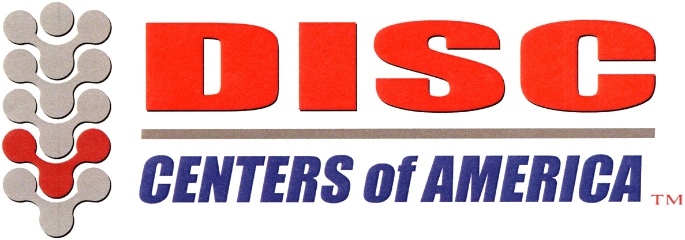

Key milestones from this guide, laid out week by week. Dr. Nissa may adjust timing based on your response.
While we pride ourselves on being a family-oriented office, you, as well as our other patients undergoing the same treatment, are here to get better.
We do not like to take such a hard stance on this issue, but based on our experience, patients who are not interrupted during their treatment are more likely to achieve better results.
It is our goal to provide the most therapeutic atmosphere possible to enhance your healing. We encourage you to make this a period of rest and relaxation. Many of our patients enjoy listening to music, reading, or simply sleeping. Whatever you find helpful to relax, we encourage you to do so — and if there is any way we can help you achieve that relaxation, please let us know.
During the initial phases of your treatment program, it is very important that you give your neck or back every opportunity to heal. Follow the recommendations below — they will help you better understand the variables that could be irritating your condition.
If you already have a lumbar brace / support band and it provides relief and stability, continue to use it as shown below. Show your lumbar support to the doctors to ensure it is being used appropriately. The lumbar support will help support your spine, limit motion in your back, and reduce pressure on the discs in your lumbar spine.
While you are undergoing your Non-Surgical Spinal Decompression Treatment, we will be re-hydrating your discs. It is important that you DRINK AT LEAST HALF your body weight in ounces of water over the next 12 weeks (unless instructed otherwise by Dr. Nissa).
| Body weight | Minimum daily water | ≈ 16 oz bottles |
|---|---|---|
| 120 lb | 60 oz | 3¾ |
| 140 lb | 70 oz | 4⅜ |
| 160 lb | 80 oz | 5 |
| 180 lb | 90 oz | 5⅝ |
| 200 lb | 100 oz | 6¼ |
| 220 lb | 110 oz | 6⅞ |
| 240 lb | 120 oz | 7½ |
| 260 lb | 130 oz | 8⅛ |
If you have a disc-related condition, standing or being up on your feet is usually the best place to be besides lying down. When you are standing, you are most likely in a very neutral position, which places the least amount of stress on the disc-related problem.
While standing, avoid bending over any countertop, such as when you are cooking, putting on make-up in the morning, or shaving. Try to bend at your knees and hips, not your lower back. If you have been in pain, you know these positions are difficult, so try to avoid them or at least use the correct technique.
Also avoid any type of lifting or bending from the ground. This might be as simple as putting on your socks: instead of reaching down to put them on, bring your foot up to you while you are sitting to avoid the stress of bending on your lower back. If picking up anything off the floor — from a pen to a bag of concrete — NEVER bend from your back; instead, bend from your hips and knees and always keep your back arched.
Sitting is by far the worst position for anyone with a bulging, protruding, or herniated disc. When you sit, most people are in a slouched posture that allows their back to flatten and actually bend forward. This causes enormous pressure on the discs and further irritates the very delicate nerves.
You avoid this problem by using a lumbar support whenever you sit — in your car seat, your office chair, or on the couch while watching a movie. If you sit with your back flattened or slouched, you are sure to be in pain when you get up. A good lumbar support places your hips and knees in a 90/90 position — a 90° angle at your hips and your knees — which ensures you are sitting upright.
There are only four positions to sleep in: back, side, stomach, or a hybrid of all four. Sleeping on your back is usually the most comfortable and least stressful position because it places your back in the most neutral position, which puts the least pressure on the discs in the lower back. A proper mattress and pillow are always recommended to provide the utmost support for both the neck and the lower back.
It is very important to have one contoured, supportive pillow under your neck and a second support or pillow under your knees to take pressure off your lower back. Sleeping on your side with a pillow between your legs is also acceptable. Sleeping on your stomach will irritate both your neck and lower back and should be avoided.
It is very important that every person with a neck- or back-related condition understands the anatomy of their problem, how that relates to how they feel, and how they eventually heal. As you have read, it is very important to follow the strict protocols put together for your program. These protocols have taken over a decade to develop and are proven methods for getting you back on track.
When it comes to getting better, understand first that disc-related injuries are extremely susceptible to poor positions. Why? When you are in the wrong position, such as sitting slouched, you place pressure on the front of the discs in both the neck and the back, which causes the disc to move backwards toward the sensitive nerves and spinal cord.
It is imperative that you avoid these positions at all costs, so that throughout your treatment program we are not in a tug-of-war with your body.